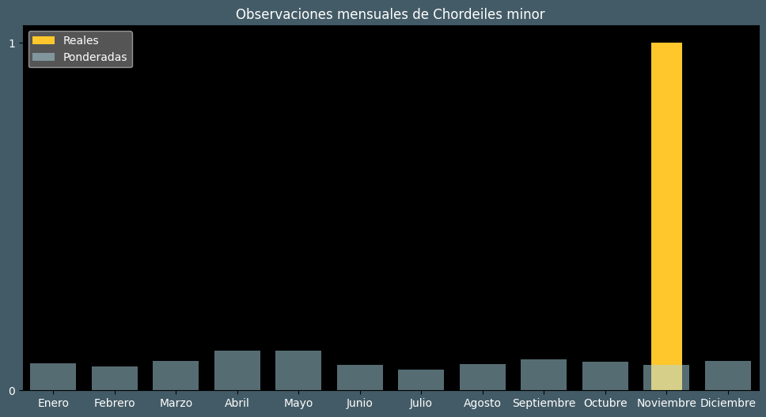

Observaciones por mes
Observations por hora

Categoría IUCN: LC
Género: Chordeiles
Familia: Caprimulgidae
Orden: Caprimulgiformes
Descubrimiento: Forster (1771)
| Idioma | Nombre |
|---|---|
| Afrikaans (af) | ? |
| Arabic (ar) | ? |
| Belarusian (be) | ? |
| Bulgarian (bg) | Вирджински сумрачен козодой |
| Catalan (ca) | Enganyapastors americà |
| Chinese (zh) | 美洲夜鹰 |
| Chinese traditional (zh-TW) | 美洲夜鷹 |
| Croatian (hr) | Mali leganj |
| Czech (cs) | Lelek sokolí |
| Danish (da) | Nathøg |
| Dutch (nl) | Amerikaanse nachtzwaluw |
| English (en) | Common nighthawk |
| Estonian (et) | Videvikusorr |
| Finnish (fi) | Isohaukkakehrääjä |
| French (fr) | Engoulevent d’amérique |
| German (de) | Falkennachtschwalbe |
| Greek (el) | ? |
| Hebrew (he) | תחמס אמריקני |
| Hungarian (hu) | Estifecske |
| Icelandic (is) | Húmfari |
| Indonesian (id) | ? |
| Italian (it) | Succiacapre sparviere |
| Japanese (ja) | アメリカヨタカ |
| Korean (ko) | ? |
| Latvian (lv) | Amerikas lēlis |
| Lithuanian (lt) | Paprastasis sutemų lėlys |
| Maceodnian (mk) | ? |
| Malayalam (ml) | ? |
| North_sami (se) | Amerihkáčahran |
| Norwegian (no) | Nordnatthauk |
| Persian (fa) | ? |
| Polish (pl) | Lelczyk mały |
| Portuguese (pt) | Bacurau-norte-americano |
| Russian (ru) | Виргинский сумеречный козодой |
| Serbian (sr) | Američki leganj |
| Slovak (sk) | Súmračník krahulčí |
| Spanish (es) | Añapero yanqui |
| Swedish (sv) | Större falknattskärra |
| Thai (th) | ? |
| Turkish (tr) | Gecedoğanı |
| Ukrainian (uk) | Анаперо віргінський |